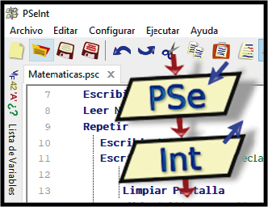

PseInt es un intérprete de un lenguaje de programación basado en pseudocódigo. El pseudocódigo es una descripción informal de alto nivel de un algoritmo, que manteniendo las convenciones estructurales de un lenguaje de programación está diseñado para la lectura humana.
